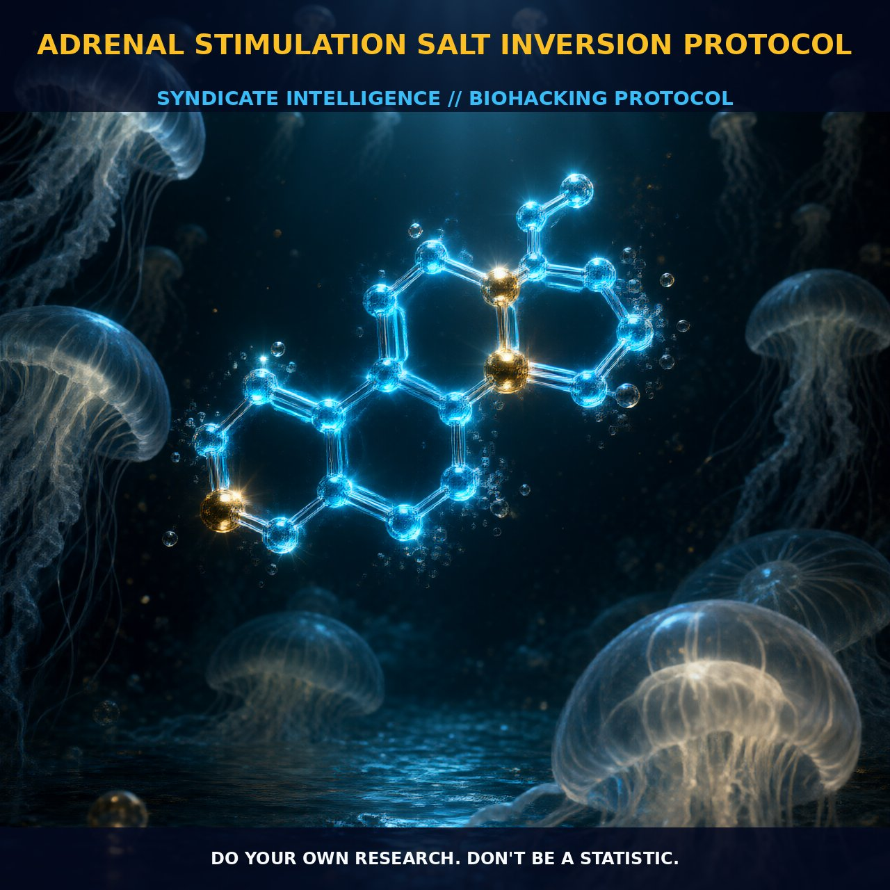

Optimizing Adrenal Function with Adrenal Stimulation Salt Inversion

1. The Mechanism
The AdrenalStimulationSaltInversionProtocol leverages a combination of adrenal stimulants and strategic salt intake to optimize the body's stress response and maintain homeostatic balance. Key components include cortisol and adrenaline, which are crucial in regulating stress and enhancing cognitive and physical performance. Cortisol, a glucocorticoid hormone, increases blood sugar levels and suppresses the immune system, while adrenaline, or epinephrine, activates the sympathetic nervous system, increasing heart rate and blood pressure.
The protocol also incorporates the manipulation of salt, specifically sodium, to manage blood pressure and fluid balance. Sodium is vital for maintaining electrolyte balance and supporting cardiovascular function, particularly during periods of stress when the body may experience increased fluid loss and electrolyte imbalances.
The HPA axis and SAS play critical roles in this protocol. The HPA axis involves the hypothalamus, which releases corticotropin-releasing hormone (CRH), stimulating the pituitary gland to release adrenocorticotropic hormone (ACTH). ACTH then triggers the adrenal cortex to release cortisol. The SAS involves the adrenal medulla, which releases adrenaline and noradrenaline in response to stress signals from the brain. These systems work in tandem to ensure the body remains in a state of homeostasis.
Cortisol also interacts with signaling pathways, such as MAPK, PKC, and PI3K, and neurotransmitters like acetylcholine and noradrenaline, supporting cognitive processes and metabolic regulation. Additionally, cortisol interacts with angiotensin, a peptide hormone that regulates blood pressure and interacts with neurotransmitters like noradrenaline and serotonin, further enhancing cognitive and behavioral processes.
2. Biological Leverage
The AdrenalStimulationSaltInversionProtocol optimizes adrenal function and supports overall health by enhancing cognitive function, increasing alertness, and improving physical performance. It leverages the intricate balance of the HPA axis and SAS to provide these benefits.
The primary biological pathways involved include insulin, glucagon, and somatostatin signaling, as well as the modulation of neurotransmitters like acetylcholine and noradrenaline. Cortisol activates MAPK, PKC, and PI3K pathways, which are crucial for cognitive processes. Additionally, cortisol interacts with angiotensin, a peptide hormone that regulates blood pressure and interacts with neurotransmitters like noradrenaline and serotonin.
Salt, particularly sodium, plays a critical role in maintaining electrolyte balance and supporting cardiovascular function. Sodium helps regulate blood pressure and fluid balance, ensuring the body maintains optimal hydration and electrolyte levels, especially during stress.
3. Tactical Implementation
To implement the AdrenalStimulationSaltInversionProtocol effectively, carefully manage the timing and dosage of adrenal stimulants and salt intake. Cortisol and adrenaline can be introduced through natural means such as exercise, stress, or exogenous supplements like Ashwagandha, which has cortisol-suppressing effects. Monitor Ashwagandha dosage to avoid HPA axis suppression. Typically, low-to-moderate doses support adrenal function without overstimulation.
Salt intake should be regulated to support cardiovascular function and maintain electrolyte balance. A moderate sodium intake of approximately 3-5 grams per day supports fluid balance and blood pressure regulation. Adjust this based on individual needs and response, with careful monitoring of blood pressure and hydration levels.
Stacking the protocol with other nootropics and adaptogens can enhance its effectiveness. Combining Agmatine with the AdrenalStimulationSaltInversionProtocol can reduce glucocorticoids (GCs) and counteract stress-related changes. Agmatine acts as an antistress agent by activating mTOR signaling, inhibiting NMDA receptors, suppressing iNOS, and maintaining bodyweight.
Timing is critical for optimal results. Take adrenal stimulants in the morning to enhance alertness and cognitive function throughout the day. Adjust salt intake based on daily activity levels and fluid loss, with higher sodium intake during increased physical activity or heat exposure.
Prostar Life Hack
To optimize adrenal function and support overall health, take adrenal stimulants in the morning and adjust salt intake based on daily activity levels and fluid loss. For example, consume 3-5 grams of sodium per day and increase this during periods of high physical activity or heat exposure.
[ AUTHOR: LEAD TECHNICAL RESEARCHER ]